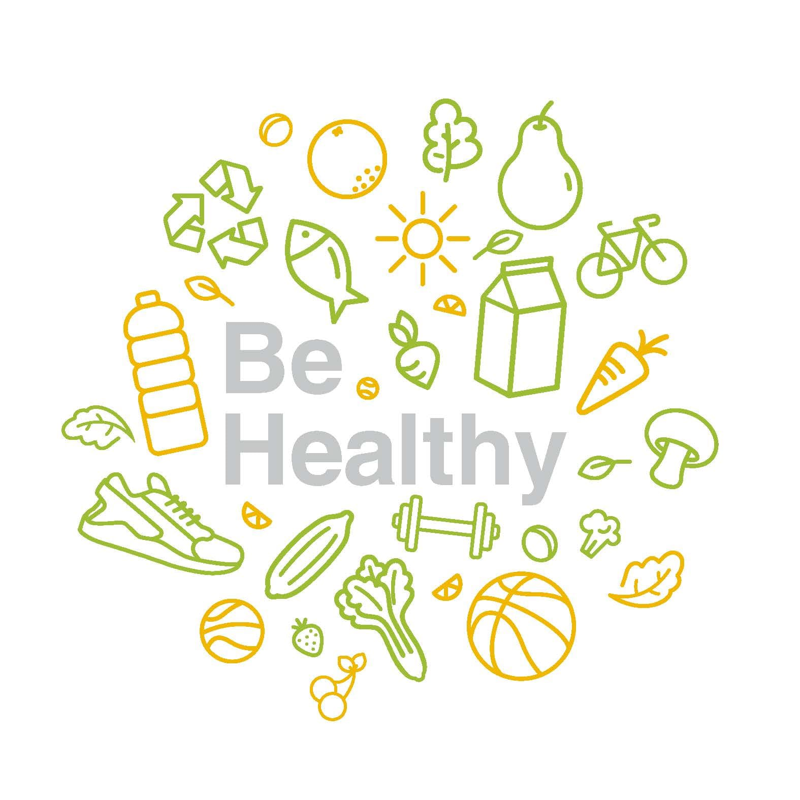

HEALTHY TIPS
The key to a healthy diet is to eat the right amount of calories for how active you are so you balance the energy you consume with the energy you use. If you eat or drink more than your body needs, you'll put on weight because the energy you do not use is stored as fat. If you eat and drink too little, you'll lose weight. You should also eat a wide range of foods to make sure you're getting a balanced diet and your body is receiving all the nutrients it needs. It's recommended that men have around 2,500 calories a day (10,500 kilojoules). Women should have around 2,000 calories a day (8,400 kilojoules). Most adults in the UK are eating more calories than they need and should eat fewer calories.
